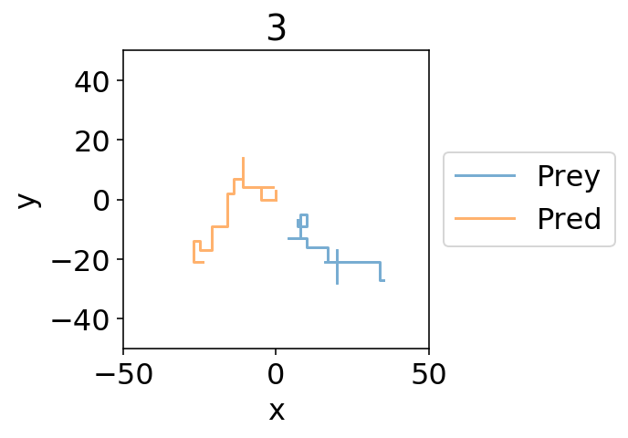
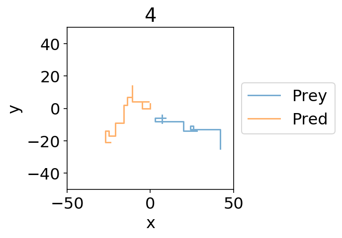
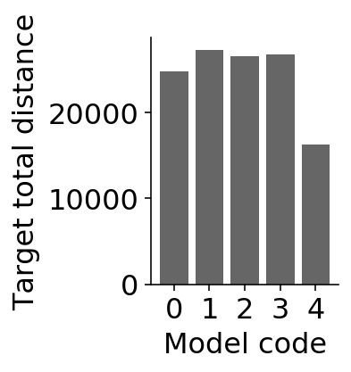
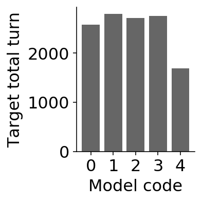

Test - prey 1 - CompetitiveGrid - ratios#
Pred vision
import shutil
import glob
import os
import numpy as np
import pandas as pd
import seaborn as sns
import matplotlib.pyplot as plt
import explorationlib
from explorationlib.agent import DiffusionGrid
from explorationlib.local_gym import uniform_targets
from explorationlib.local_gym import constant_values
from explorationlib.local_gym import CompetitiveGrid
from explorationlib.run import multi_experiment
from explorationlib.util import select_exp
from explorationlib.util import select_agent
from explorationlib.util import load
from explorationlib.util import save
from explorationlib.plot import plot_position2d
from explorationlib.plot import plot_positions2d
from explorationlib.plot import plot_length_hist
from explorationlib.plot import plot_length
from explorationlib.plot import plot_targets2d
from explorationlib.plot import show_gif
from explorationlib import score
from explorationlib.score import num_death
from explorationlib.score import average_reward
from explorationlib.score import total_reward
pygame 2.0.1 (SDL 2.0.14, Python 3.6.7)
Hello from the pygame community. https://www.pygame.org/contribute.html
# Pretty plots
%matplotlib inline
%config InlineBackend.figure_format='retina'
%config IPCompleter.greedy=True
plt.rcParams["axes.facecolor"] = "white"
plt.rcParams["figure.facecolor"] = "white"
plt.rcParams["font.size"] = "16"
# Uncomment for local development
%load_ext nb_black
%load_ext autoreload
%autoreload 2
1 pred, 1 preys#
Search pred vision
Run#
detection_radii = [1, 2, 3, 4, 5]
colors = ["darkgreen", "seagreen", "cadetblue", "steelblue", "mediumpurple"]
names = list(range(5))
# !
results = []
for name, detection_radius in zip(names, detection_radii):
# Intial targets
env.add_targets(
target_index,
targets,
values,
detection_radius=detection_radius,
p_target=p_target
)
# Preds
pred = [DiffusionGrid(
scale=scale,
min_length=min_length,
step_size=step_size
)]
# Preys
preys = [
DiffusionGrid(
scale=scale,
min_length=min_length,
step_size=step_size
)] * num_targets
# All agents
agents = preys + pred
# !
comp_exp = multi_experiment(
f"test_{name}",
agents,
env,
num_steps=num_steps,
num_experiments=num_experiments,
seed=404,
split_state=False,
dump=False
)
results.append(comp_exp)
test_0: 100%|██████████| 100/100 [00:03<00:00, 28.32it/s]
test_1: 100%|██████████| 100/100 [00:04<00:00, 21.08it/s]
test_2: 100%|██████████| 100/100 [00:02<00:00, 34.78it/s]
test_3: 100%|██████████| 100/100 [00:02<00:00, 36.71it/s]
test_4: 100%|██████████| 100/100 [00:02<00:00, 34.73it/s]
num_experiment = 5
plot_boundary = (50, 50)
for name, exp in zip(names, results):
# Example bout
ax = None
ax = plot_positions2d(
select_exp(exp, num_experiment),
num_agents,
boundary=plot_boundary,
labels=["Prey", "Pred"],
title=name,
colors=None,
alpha=0.6,
figsize=(3, 3),
)


env.initial_targets
[array([-7.25198031, 8.39356377])]
# Results
num_agent = 0
scores = []
for i, result, color in zip(names, results, colors):
l = 0.0
for r in result:
l += r["agent_history"][num_agent]["agent_total_l"][-1]
scores.append(l)
# Tabulate
m, sd = [], []
for s in zip(scores):
m.append(np.mean(s))
# Plot means
names = list(range(5))
fig = plt.figure(figsize=(3, 3))
plt.bar([str(n) for n in names], m, color="black", alpha=0.6)
plt.ylabel("Target total distance")
plt.xlabel("Model code")
plt.tight_layout()
sns.despine()

# Results
num_agent = 0
scores = []
for i, result, color in zip(names, results, colors):
l = 0.0
for r in result:
l += r["agent_history"][num_agent]["agent_num_turn"][-1]
scores.append(l)
# Tabulate
m, sd = [], []
for s in zip(scores):
m.append(np.mean(s))
# Plot means
names = list(range(5))
fig = plt.figure(figsize=(3, 3))
plt.bar([str(n) for n in names], m, color="black", alpha=0.6)
plt.ylabel("Target total turn")
plt.xlabel("Model code")
plt.tight_layout()
sns.despine()

scores = []
for i, result, color in zip(names, results, colors):
scores.append(num_death(result))
# Plot means
names = list(range(5))
fig = plt.figure(figsize=(3, 3))
plt.bar([str(n) for n in names], scores, color="black", alpha=0.6)
plt.ylabel("Deaths")
plt.xlabel("Model code")
plt.tight_layout()
sns.despine()
num_death: 100%|██████████| 100/100 [00:00<00:00, 36551.67it/s]
num_death: 100%|██████████| 100/100 [00:00<00:00, 12595.89it/s]
num_death: 100%|██████████| 100/100 [00:00<00:00, 8043.85it/s]
num_death: 100%|██████████| 100/100 [00:00<00:00, 6404.59it/s]
num_death: 100%|██████████| 100/100 [00:00<00:00, 5268.37it/s]
# Results
scores = []
for i, result, color in zip(names, results, colors):
r = total_reward(result)
scores.append(r)
# Tabulate
m, sd = [], []
for s in zip(scores):
m.append(np.mean(s))
sd.append(np.std(s))
# Plot means
fig = plt.figure(figsize=(3, 3))
plt.bar([str(n) for n in names], m, yerr=sd, color="black", alpha=0.6)
plt.ylabel("Avg. score")
plt.xlabel("Model code")
plt.tight_layout()
sns.despine()
total_reward: 100%|██████████| 100/100 [00:00<00:00, 30415.55it/s]
total_reward: 100%|██████████| 100/100 [00:00<00:00, 16655.30it/s]
total_reward: 100%|██████████| 100/100 [00:00<00:00, 24843.36it/s]
total_reward: 100%|██████████| 100/100 [00:00<00:00, 26067.77it/s]
total_reward: 100%|██████████| 100/100 [00:00<00:00, 23844.82it/s]